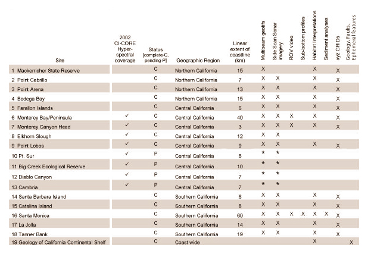

The role of CSUMB in the CI-CORE inititative is to take the lead in developing a suite of spatial data modeling, image processing and GIS tools that can be used in the fusion of high-resolution seafloor habitat data with hyperspectral sea surface and water column imagery. The CSUMB Seafloor Mapping Lab (SFML) has been acquiring and developing the infrastructure for the delivery of its high-resolution multibeam bathymetry and habitat data to the CI-CORE partners for environmental change detection and calibration of hyperspectral data sets.
Table 1. CI-CORE marine habitat geospatial data archives provided by CSUMB-SFML. Data sets are derived from acoustic remote sensing surveys (multibeam and sidescan sonar), and are being made available to partners and the public via the SFML Internet Map Server (http://arcims.csumb.edu). Each site listed in Table 1 will eventually contain a imagemap link to its associated IMS map service. Pending site surveys are scheduled for Spring 2003 as part of this year's CI-CORE project.
